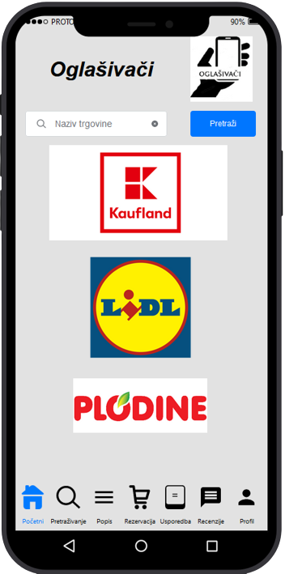

Dominik Vuljak
Student
Student sam treće godine preddiplomskog studija Informacijski sustavi na Fakultetu Organizacije i Informatike u Varaždinu.
Prije svog fakultetskog obrazovanja, završio sam srednju školu za zanimanje Tehničar za računalstvo te sam već tamo naučio osnove HTML, CSS i javascript tehnologija.
Tijekom učenja ovih tehnologija, shvatio sam da želim proširiti svoja znanja i vještine na području frontend developmenta.
Kroz fakultetsko obrazovanje dodatno sam proširio znanje o raznim područjima programiranje, a u ovom semestru pohađam kolegije Web dizajn i programiranje
te Programsko inžinjerstvo koji su uže vezani uz frontend. S druge strane, prošlog semestra imao sam priliku raditi na projektu izrade prottipa mobilne aplikacije.
Također, trenutno se nalazim na Erasmus+ studijskom boravku u Brnu gdje osim programiranja, imam priliku proširiti
znanja u sferi poslovanja, ali ponajviše biti dio međukulturalne zajednice.
U slobodno vrijeme volim pratiti sportska događanja, a uz to se i amaterski bavim nogometom. Od ostalih hobija tu su povremeno igranje računalnih igara
, proučavanje programskih jezika i tehnologija te gledanje filmova i serija.
TEHNOLOGIJE


MOJI PROJEKTI

U prošlom semestru, pohađao sam kolegij "Upravljanje informatičkim uslugama" u sklopu kojeg sam radio prototip aplikacije koji je
bio fokusiranna dizajn. U kreiranju prototipa bilo je potrebno voditi se UI/UX načelima. Aplikacija za koju smo moj tim i ja
izrađivali prototip, zamišljena je da korisnicima omogućava pregled artikala iz odabranih trgovina, usporedbu dva artikla, stvaranje
vlastitog popisa za trgovinu, rezervaciju proizvoda na sat vremena te ocjenjivanje proizvoda i trgovina.
Iako ovaj projekt nije direktno vezan uz frontend programiranje, omogućio mi je
da shvatim razvoj aplikacije s pogleda dizajnera s kojim ću u budućnosti, kao dio frontend tima, surađivati na projektima i u fazi razvoja.
MOJI HOBIJI


email: dvuljak318@gmail.com
mobitel: +385 99 512 2734